Human-centered UI/UX redesign and high-fidelity healthcare portal prototyping aimed at reducing fragmentation when finding primary care in Ontario.
Ontario Health Access Companion
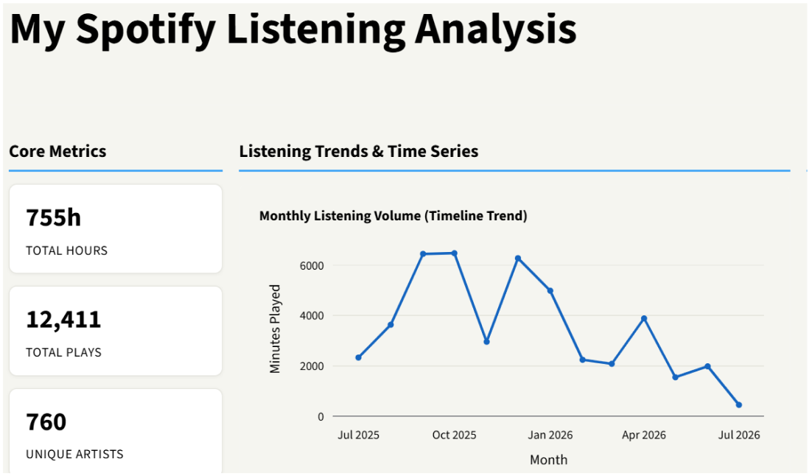
An interactive machine learning dashboard that analyzes a year of streaming data. Uses K-Means Clustering to segment listening into 4 behavioral archetypes and Isolation Forest to detect anomaly peak days.
Listening Between the Lines: A year of Spotify Data
tools
What I use
Data/Design
Python (Pandas, NumPy)
Figma
Matplotlib/Seaborn
Scikit-learn
Power BI
SQL
Excel Office Scripts
Streamlit
GitHub
Experience
May 2026 - Present
Data Analyst Intern @ CIBC
Sept 2026 - Present
Product Designer @ Uoft Blueprint
Feb 2025 - Nov 2026
Research Assistant @ Interactive Media Lab
About Me
Hi! I'm Ariel
I'm a third year student at the University of Toronto, majoring in Industrial Engineering with a minor in Artificial Intelligence.
I'm currently a Data Analyst intern at CIBC with the SPPD CoE and Infrastructure Project Finance teams (It's definitely a ride being on two teams!).
I'm interested in the intersection of data science and user experience design. I believe the best products are built on evidence: I use data analytics and quantitative research to identify user friction, and UX/UI design to turn those insights into intuitive visual interfaces.
Outside of design and data, you'll probably find me crocheting or trying all the matcha spots in Toronto!
×
Latest Projects
my experience
Ontario Health Access Companion
Human-centered UI/UX redesign and high-fidelity healthcare portal prototyping aimed at reducing fragmentation when finding primary care in Ontario.
Listening Between the Lines: A year of Spotify Data
An interactive machine learning dashboard that analyzes a year of streaming data. Uses K-Means Clustering to segment listening into 4 behavioral archetypes and Isolation Forest to detect anomaly peak days.
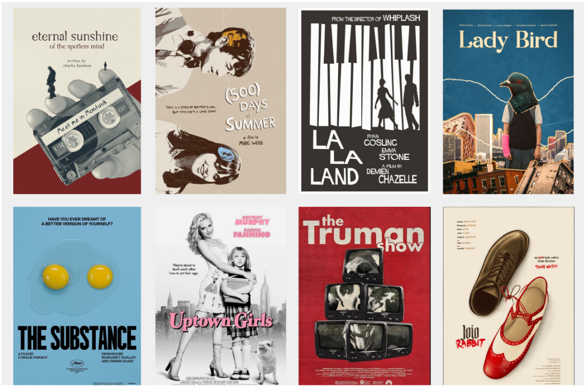
Movie Recommender System: Hybrid Filtering & Evaluation
A dual-approach recommendation engine built on the MovieLens 1M dataset. Features content-based TF-IDF genre matching and an SVD matrix factorization model that reduced rating prediction RMSE by ~17%
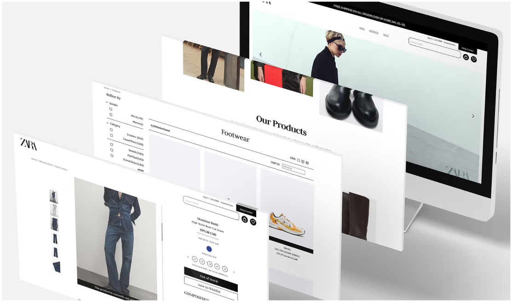
Zara Website Redesign
An e-commerce UX case study redesigning Zara’s desktop experience in Figma. Uses Nielsen heuristic evaluations and competitive benchmarking to introduce uniform product grids, breadcrumbs, and WCAG-compliant contrast.
Accessing primary care in Ontario is severely fragmented due to outdated registries, inconsistent clinic hours, and a lack of real-time availability. This project applies Human-Centered Design (HCD) principles to design, test, and iterate a digital companion app that streamlines how patients find family doctors, search walk-in clinics, access emergency hotlines, and interact with an AI triage chatbot.
Ontario patients frequently face systemic barriers in identifying care providers accepting new patients or walk-in clinics with current operating hours, causing unnecessary reliance on emergency rooms. Our team set out to:
Reduce Cognitive Overhead: Replace confusing terminology and redundant form inputs with standardized, intuitive search patterns.
Improve Wayfinding & Status Visibility: Establish explicit visual cues, active-tab states, and unified global navigation.
Support Multimodal Care Pathways: Unify family doctor search, walk-in clinic discovery, telephone hotlines, and interactive chatbots into a single coherent portal.
human-centered iterative design process
The platform underwent two iterative rounds of low-fidelity usability testing (4 participants/round) followed by a final high-fidelity evaluation (5 participants) across 6 core tasks:
Focus: Resolving navigation ambiguity and structuring content hierarchy.
In response to initial feedback, restructured global navigation into unified categories (Find Care, Hotline, About, FAQ), repositioned authentication controls to top-right standard web conventions, and added explicit section dividers to clinic detail pages.
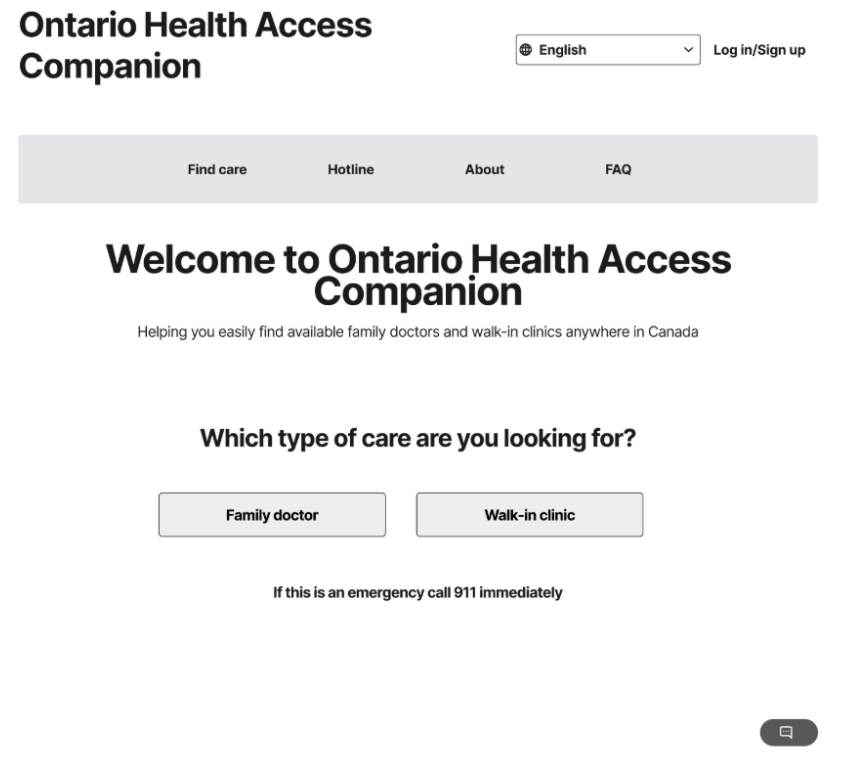
Homepage v2 (1/6)
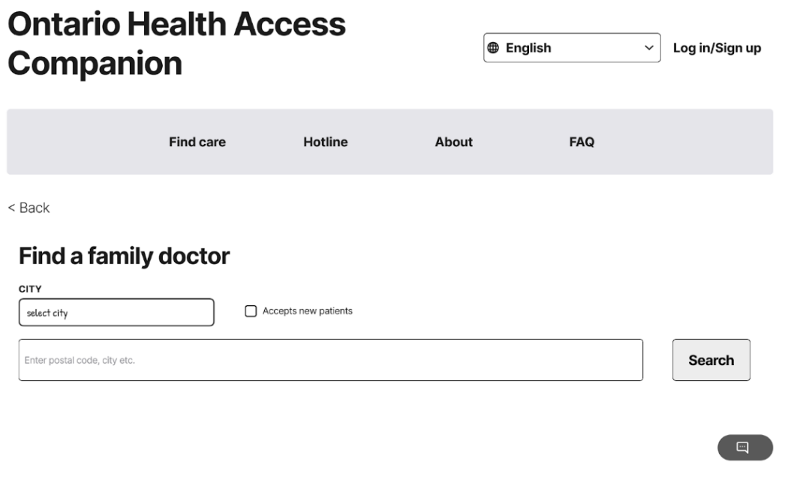
Family Doctor Search Page V2 (2/6)
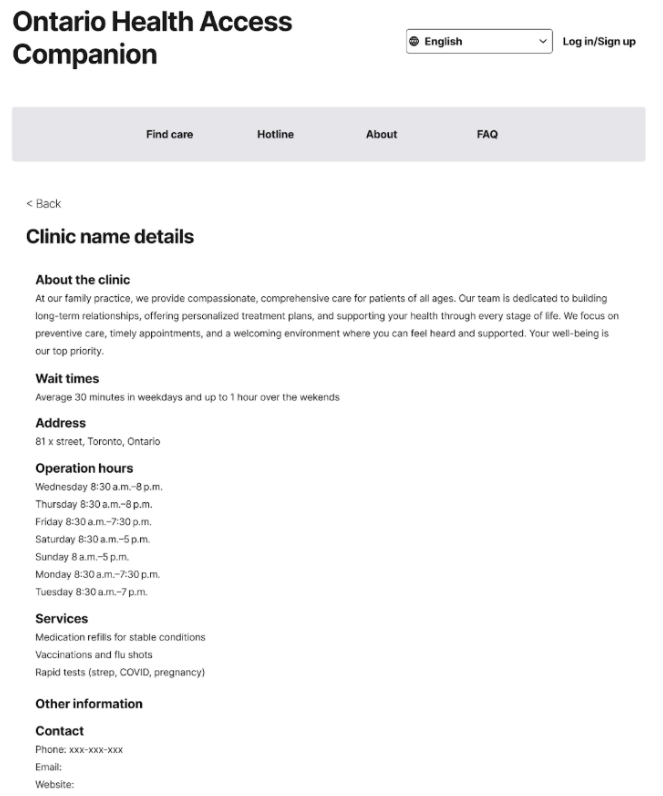
Clinic Details v2 (3/6)
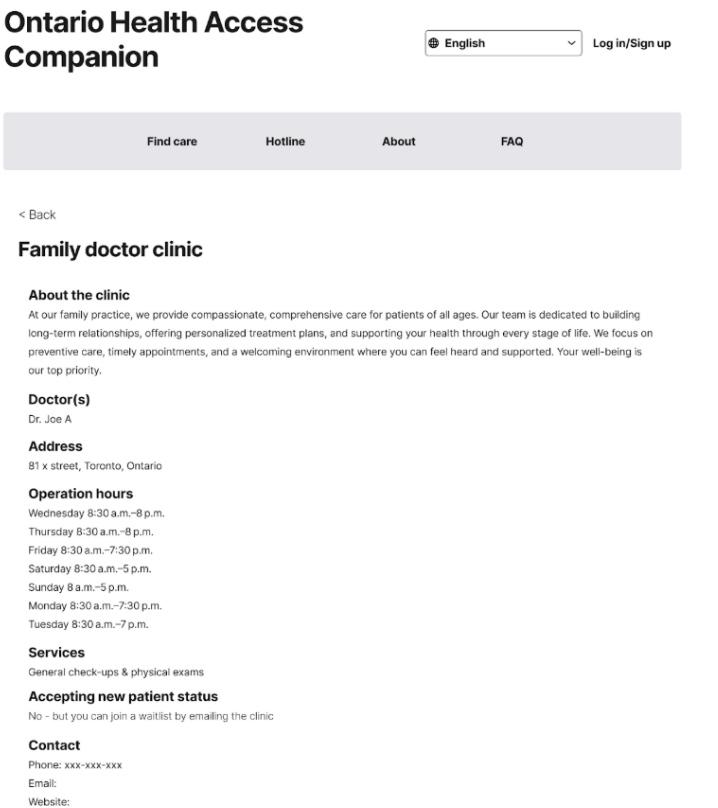
Family Doctor Details v2 (4/6)
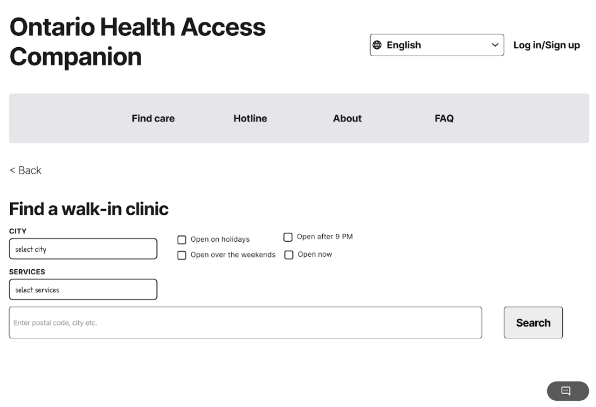
Walk-In Clinic Search V2 (5/6)
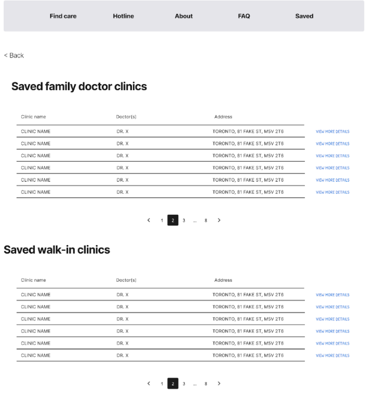
Saved Clinics & Family Doctors (6/6)
Key Usability Findings (Round 2 Testing):
Search was “straightforward” and “intuitive”.
Remaining Issues:
No visible active-tab indicator in the navigation
Lack of an emergency warning banner on pages
Search button didn't have a disabled state logic
Saved items page filters (There were no filters to toggle between saved doctors vs. saved clinics)
The chatbot lacked guided prompt suggestions (Recognition over Recall violation)
Stage 3: High-Fidelity Prototype & Design System
Focus: Visual polish, accessibility compliance, micro-interactions, and edge-case handling.
The final high-fidelity prototype established a trustworthy visual design system built on a calm healthcare color palette (muted blues and soft greens), accessible typography, standardized iconography, and explicit interactive states.
final design features
1. Login Update, Saved Doctor/Clinic Toggle
No need to create an account for website access, users may create an account to save clinics and family doctors. Added option to toggle between the two. Added tab indication in navigation bar.
Enhances visual consistency, strengthens brand identity, improves readability, and creates a more intuitive and accessible user experience. Improved contrast and structure of search pages. Less clutter and more organized.
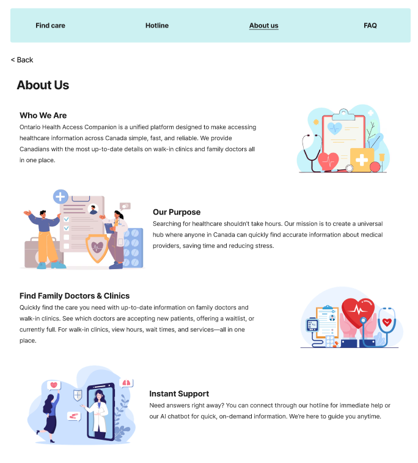
Search Results & Clinic Page Enhancements
Refined search result tables with distinct status tags, clear filter controls, and detailed clinic information cards including operation hours and doctor profiles.
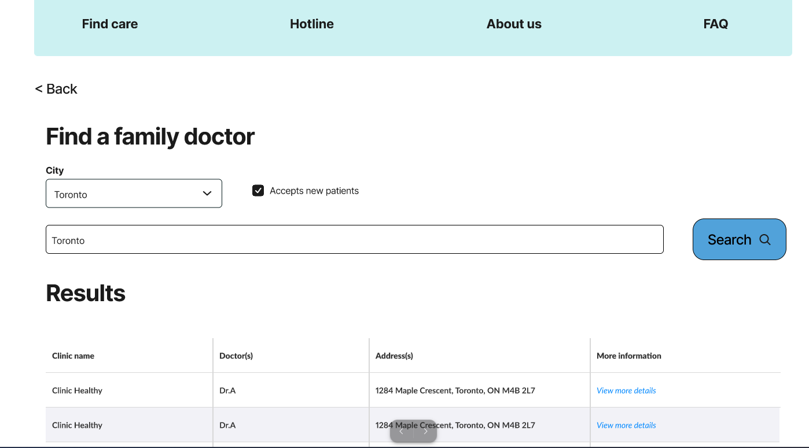
Search Results View
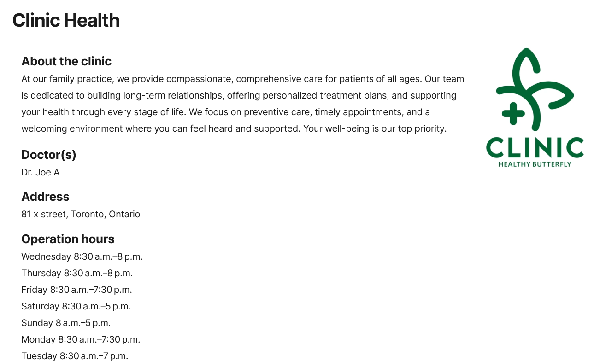
Clinic Profile Details
4. ChatBot Prompt
Distinct colour scheme for chatbot, added prompts about common concerns for users to start off with.
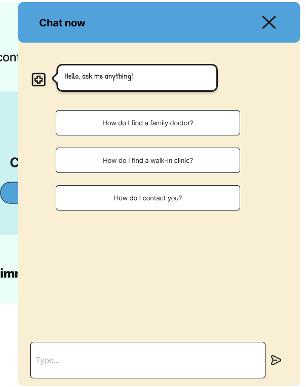
AI Chatbot with Suggested Prompts
Final Usability Validation & Metrics
A final structured usability study ($N=5$ participants aged 20–22 navigating 6 core tasks) demonstrated strong performance across all primary metrics:
Effectiveness: 100% Task Completion Rate (6/6 core tasks completed by all participants with zero critical errors).
Efficiency: Participants located clinic operating status ("Open Now") in under 3 seconds without navigation hesitation.
Satisfaction: Users praised the visual hierarchy as "professional, clean, and soothing," expressing high confidence in navigating care options.
Key Takeaways & Human-Centered Design Lessons
Safety Belongs in the Global Layer: Critical health information (like 911 emergency banners) must persist across all views, as users do not always enter through the homepage.
Recognition Over Generation in Triage: Presenting suggested quick-prompt pills inside AI chatbots dramatically reduces friction compared to empty text inputs during anxious moments.
Structured Hierarchy Prevents Overwhelm: Segmenting dense, multi-variable medical data into distinct cards allows users to locate critical operational details almost instantly.
×
Listening Between the Lines: A year of Spotify Data
This project transforms a year of raw Spotify streaming data into an interactive machine learning-driven analytics application. The platform uses a custom-engineered three-column technical architecture to map hidden behavioural patterns, highlight anomaly thresholds and profile listening habits over time.
To move beyond surface-level top charts, the pipeline aggregates raw streams into continuous listening sessions (time gaps > 30 mins)
Feature Engineering: Sessions are vectorized across 8 multidimensional features: total minutes played, absolute track count, unique artist distribution, skip rate metrics, average duration per track, weekend vs weekday and explicit time of day ratios (evening vs late night).
Algorithmic Modeling: Features are isolated and scaled via StandardScaler to ensure zero-mean and unit variance, then fed into the K-Means Clustering algorithm at k=4.
Output: Maps music sessions into four distinct behavioural profiles:
Deep Dive (focused, uninterrupted album listening)
Marathon Mode (high volume, long duration background loops)
Browsing Mode (playlist skimming with high skip rate)
Evening Unwind (structured, after hours routine listening)
anomaly detection
Structural Outlier Detection (Isolation Forest)
To pinpoint days of irregular user behaviour, such as study listening sessions, the application implemented unsupervised anomaly detection
Algorithmic Modeling: A non-parametric Isolation Forest model isolates anomalous data points by randomly partitioning features across the daily aggregated dataset
The Output: Computes anomaly scores to separate standard listening behaviour from statistical anomalies, overlaying contextual data tracking on identified peak outliers across historical timeline.
design
Front End & UI/UX Design
Macro 3-Column Interface: Built a bespoke dashboard layout optimized for horizontal telemetry. The interface isolates stacked KPI telemetry cards on the far left, centers high-density Plotly data trends in the middle view, and structures tabular breakdowns and clustering distributions on the right panel.
Unified Visual Theme: Overrode the default Streamlit canvas using injected CSS to maintain a clean aesthetics. This features custom card containers, transparent chart backgrounds and readable typography.
Asynchronous UX: Integrated custom JavaScript scroll-reveal viewport observer using an asynchronous IntersectionObserver iframe component to animate panels into view as the user scrolls.
×
Movie Recommender System: Hybrid Filtering & Evaluation
Designed and deployed a dual-approach recommendation engine analyzing the MovieLens 1M dataset. The system solves both cold-start and personalization challenges by combining content metadata matching with matrix-factorization-based collaborative filtering.
Constructed feature vectors using TF-IDF on genre metadata and calculated cosine similarity matrices to output immediate, title-matched recommendations.
Collaborative Filtering (SVD)
Leveraged the Surprise library to train Singular Value Decomposition model on historical user rating data, learning latent factors to predict unobserved user-item preferences.
Interactive UI:
Built a responsive Streamlit front-end allowing users to toggle between movie-title similarity search and personalized recommendation lists.
×
Zara Website Redesign
Balancing High-Fashion Aesthetic with Functional E-Commerce Usability
Zara is a leading global fast-fashion brand, yet its desktop e-commerce platform faces persistent criticism for poor navigation, low contrast, and non-standard layouts. This project evaluates key usability breakdowns across Zara’s desktop experience and proposes a redesigned interface that improves task flow, wayfinding and WCAG accessibility while preserving the brand’s signature minimalist aesthetic.
To map systematic usability issues, the research phase combined quantitative heuristics with qualitative user sentiment:
Nielsen Heuristic Evaluation: Evaluated an end-to-end checkout flow for basic apparel item. Identified critical usability breaches across Aesthetic & Minimalist Design, Flexibility & Efficiency of Use and Recognition Rather Than Recall (rated on a 0-4 severity scale).
Secondary Market Research: Aggregated qualitative user complaints across Reddit and Medium. Key findings highlighted severe user frustration, often driving site abandonment and lost sales due to unintuitive navigation and low visual contrast.
Competitive Benchmarking: Evaluated key competitors (H&M and Uniqlo). Benchmarks revealed that industry leaders consistently utilize structured breadcrumbs, uniform product grids, high text-to-background contrast, and actionable homepage CTAs.
Heuristic Evaluation & Competitive Analysis
exploration & trade off analysis
Before finalizing the interface, multiple conceptual layouts were prototyped and weighed against user goals and brand equity:
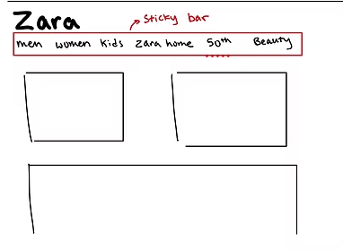
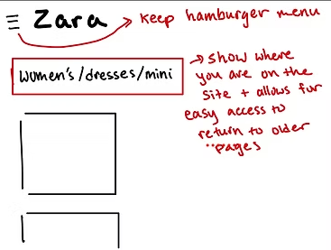
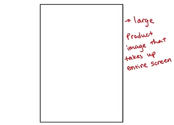
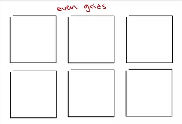
key design solutions
Wayfinding and & Breadcrumb Architecture
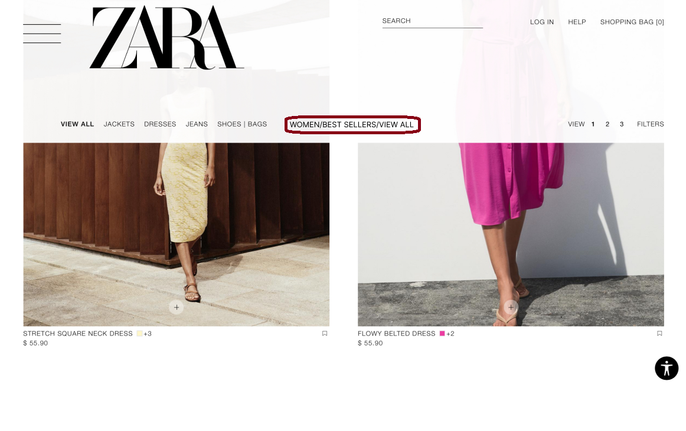
Introduced persistent breadcrumb trains, inspired by industry standards to allow effortless step backs along the catalog hierarchy
Uniform Product Grid
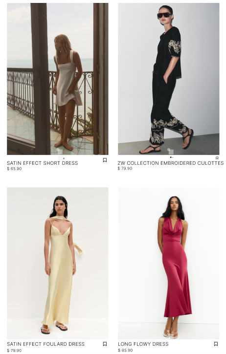
Replaced Zara's inconsistent pyramid layout with an even grid structure, reducing visual fatigue and streamlining product comparison
Contrast & WCAG Compliance
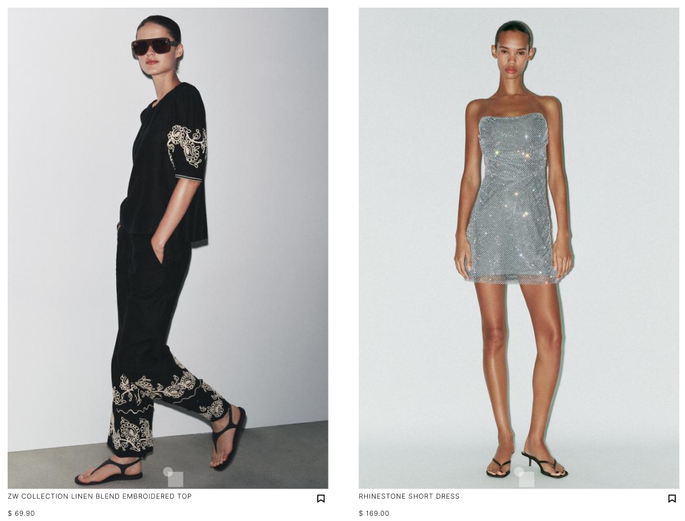
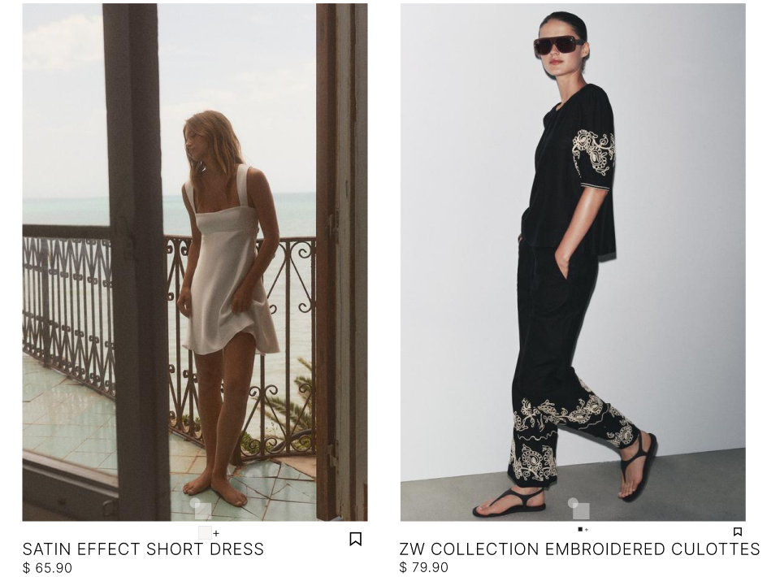
Increased typography sizing to ensure readability
Call To Action
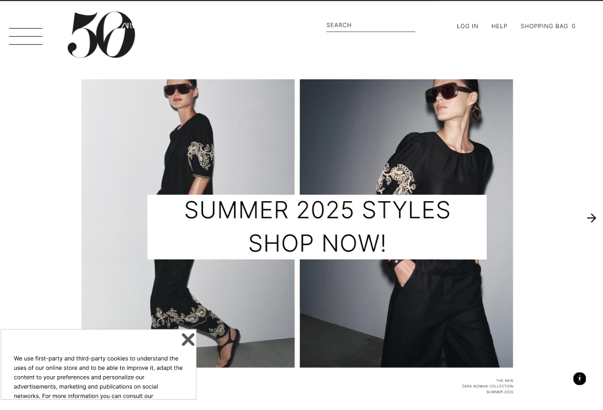
Added minimalist banner CTA on the landing page to surface seasonal collections immediately upon entry to site